삼협철망(주)
SAMHYUP WIRE MESH CO., LTD.
삼협철망 종합 제품 카탈로그
인천 직영 공장 대용량 생산설비 완비 • 중간 마진 없는 공장직판
고강도 용접철망 • 메쉬휀스
토목 • 건축 • 조경 자재 전문
삼협철망(주)은 공장 직영 12Point·7Point·5Point 정밀 자동 스폿 용접기 및 자동 직선기 설비 라인을 통해 오차 없는 균일한 격자 강도와 탁월한 인장력을 갖춘 용접철망(와이어메쉬), 인테리어용접, 동물보호망, 개비온철망을 전국 건설·토목 현장에 최적의 공장도 가격으로 직송 납품합니다.
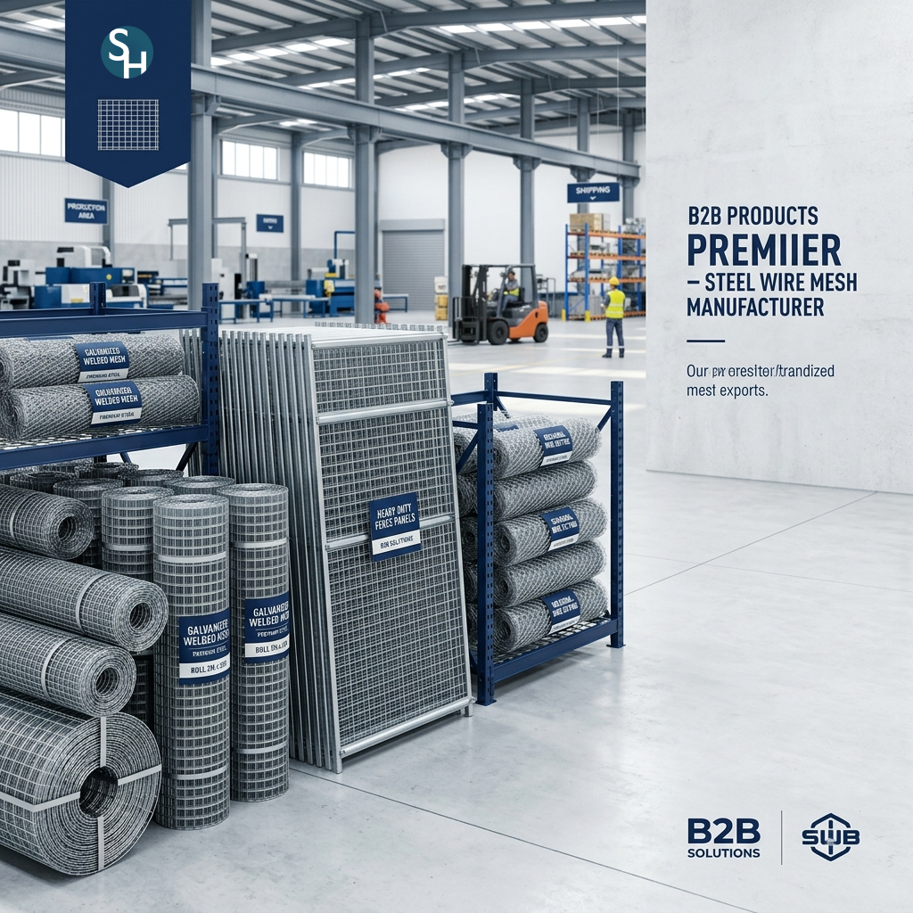
인천 왕길동 직영 공장 정밀 자동화 용접 생산설비
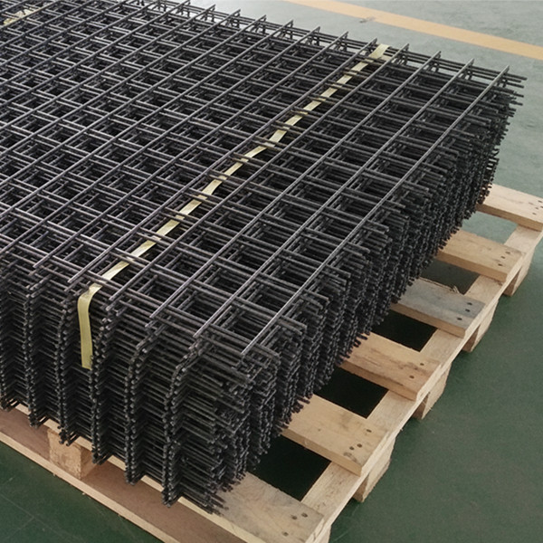
① 고강도 용접철망 (와이어메쉬)

② 인테리어용접 & 일체형메쉬

③ 동물보호망 (유해동물 차단)
고강도 용접철망 (와이어메쉬 / Assembled Mesh)
High-Strength Welded Wire Mesh for Concrete Slab Reinforcement
정밀 자동 전기저항 용접 • 균일한 인장강도 • 공장 바닥·도로 포장 콘크리트 타설 균열 원천 방지
삼협철망(주)의 용접철망은 직영 공장의 정밀 자동화 용접 라인을 통해 가로선과 세로선을 직교 용접하여 생산됩니다. 보통철선(흑선), 아연도금선, 스테인리스 강선(SUS) 등 다양한 강종을 취급하며 원하시는 선경과 규격으로 맞춤 주문 생산(분체도장 포함)이 가능합니다.
- 흑선 강종: 3Ø, 4Ø, 5Ø, 6Ø, 8Ø
- 아연도금선: 3Ø, 4Ø, 5Ø
- 스테인리스 (SUS): 2Ø, 3Ø, 4Ø, 5Ø, 6Ø, 8Ø
- 제작 가능 치수: 폭 최대 2,400mm × 길이 최대 6,000mm까지 주문제작 가능 (그 외 선경 및 규격 별도 문의)
용접철망 제품 규격표 (삼협철망 공식 사양)
※ 최대 2,400 × 6,000mm까지 맞춤 주문제작 가능
| 선경 (Wire Diameter) |
망목 (Mesh Size) |
제작 사이즈 |
취급 소재 (강종) |
| 3Ø |
20 × 20 mm ~ 부터 가능 |
주문제작 가능 |
흑선 / 아연도금선 / SUS |
| 4Ø |
25 × 25 mm ~ 부터 가능 |
주문제작 가능 |
흑선 / 아연도금선 / SUS |
| 5Ø |
35 × 35 mm ~ 부터 가능 |
주문제작 가능 |
흑선 / 아연도금선 / SUS |
| 6Ø |
50 × 50 mm ~ 부터 가능 |
주문제작 가능 |
흑선 / SUS (아연도금 협의) |
| 8Ø |
75 × 75 mm ~ 부터 가능 |
주문제작 가능 |
흑선 / SUS (아연도금 협의) |
실제 생산 및 현장 출고 갤러리
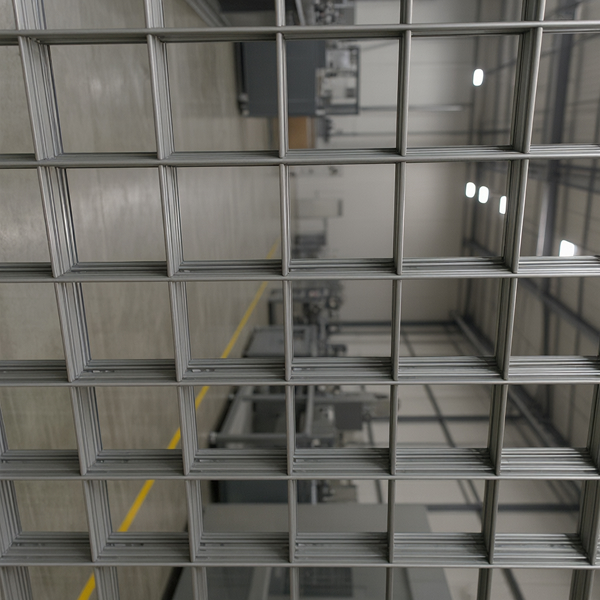
정밀 플랫 용접 완제품

밴딩 결속 및 전국 화물 직송
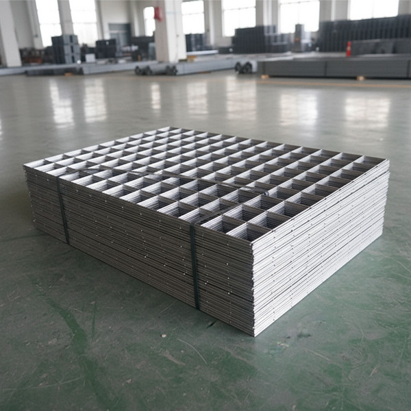
도면 치수 정밀 검수 완료
인테리어용접 • 일체형메쉬 (Interior & Flat Mesh)
Architectural Interior Wire Mesh • Flat Welded Screen
단차 없는 플랫 융착 용접 • 감각적인 상업 공간 연출 • 정밀 분체도장 및 SUS 가공
철선 교차부를 정밀 가압 성형 용접하여 두께 단차를 완전히 해소한 고품격 일체형 메쉬입니다. 이음매가 없어 매끄러우며 도장 밀착성이 뛰어나 카페, 백화점, 상업시설 천정 메쉬 인테리어 및 감각적인 벽면 파티션으로 널리 납품됩니다.
- 소재 강종: 아연도금선(GI), 스테인리스 강선(SUS304), 보통철선(흑선)
- 표면 처리: 블랙/화이트/커스텀 컬러 고급 분체정전도장 및 고내식 도금
- 제품 강점: 교차부 단차가 없는 일체형 플랫 용접으로 시공성 및 핸들링 우수
- 주요 용도: 호텔·빌딩 천정재, 전시 매대, 파티션, 공구 보관함, 디자인 벽체
인테리어용접 • 일체형메쉬 제작 사양 (공식 기준)
※ 원하시는 선경 • 망목 • 사이즈 100% 맞춤 제작 (분체도장 포함)
| 구분 |
가공 특징 및 장점 |
취급 소재 및 마감 |
적용 범위 (주요 용도) |
| 천정 및 벽면 인테리어망 |
철선 선택폭이 넓어 경량화 가능 • Mesh size의 다양함으로 감각적인 연출 |
흑선, 아연도금선, SUS
(고급 분체도장 처리) |
천정 및 벽면 인테리어, 각종 소품 제작 |
| 일체형 플랫 메쉬 (Flat) |
교차부를 납작하게 용접하여 두께 단차 해소, 이음매 없는 평면 및 뛰어난 시공성 |
가압 성형 정밀 스폿 용접
(완전한 도장 밀착) |
노출 천정메쉬, 백화점/매장 디스플레이 매대 |
| 특수 박스/파티션 가공망 |
원하는 치수 도면 100% 반영 주문생산 • 반영구적 내구성 |
도면 맞춤 선경 • 규격
(부식 방지 아연/SUS) |
공구 및 부품 Box 제작, 공간 분리 파티션 |
인테리어용접 가공 및 시공 실적 갤러리
상업공간 천정 메쉬 인테리어

정밀 블랙 분체도장 마감
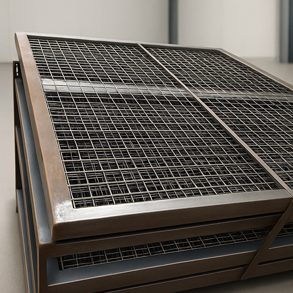
단차 없는 일체형 플랫 메쉬
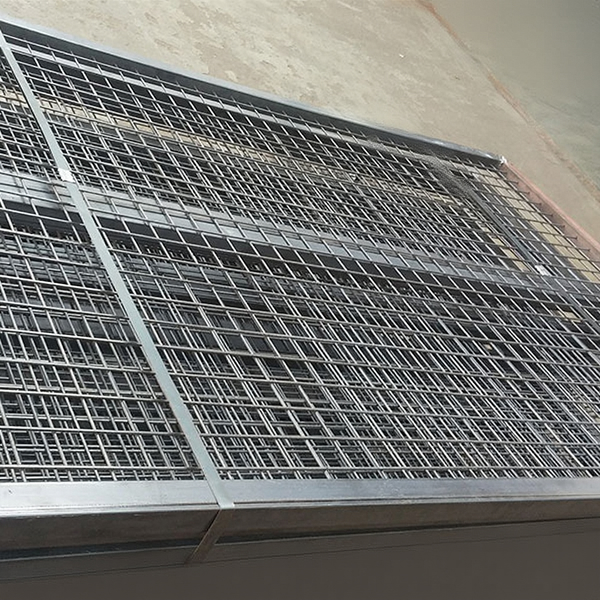
공간 분리 디자인 파티션
동물보호망 (야생동물 유도방호 휀스)
Wildlife Protection & Agricultural Barrier Fence
고속도로 로드킬 원천 차단 • 농가 멧돼지/고라니 침입 방지 • 촘촘한 고강도 안전 울타리
야생동물의 출몰 지역에 설치해 야생동물 침입을 방지하고 동물의 차량 충돌로부터 운전자와 동물의 생명을 보호합니다. 촘촘하고 견고하게 제작하여 작은 뱀 한 마리도 빠져나가지 못하도록 정밀 가공합니다.
- 제작 방식: 원하시는 선경, 망목, 사이즈 100% 맞춤 제작 (분체도장 포함)
- 강선 소재: 고내식 아연도금 강선 및 폴리에스테르 분체정전도장
- 주요 특징: 촘촘하고 견고한 격자 용접으로 소형 유해동물 완벽 차단
- 적용 현장: 고속도로, 국도변 유도 방호 울타리, 농가 과수원, 태양광 발전소
동물보호망 제작 사양 및 적용 구분
※ 현장 발주 도면 맞춤 제작
| 구분 |
가공 형태 및 특징 |
도장 및 마감 사양 |
주요 설치 구간 |
| 도로 방호 울타리형 |
차량 충돌 방지 및 대형 야생동물 진입 차단 |
고내식 아연도금 / 다크그린 분체도장 |
고속도로, 국도변 로드킬 방지 구간 |
| 농가 유해조수 차단형 |
작은 동물 침입을 막는 하단 촘촘한 맞춤 격자망 |
아연도금선 맞춤 가공 |
과수원, 농경지, 인삼밭 경계 |
| 태양광 및 산업시설형 |
외부 침입 방지 및 시설물 보호 안전망 |
분체도장 및 현장 맞춤 규격 |
태양광 발전단지 경계, 산업 시설 울타리 |
현장 시공 및 납품 사진 갤러리
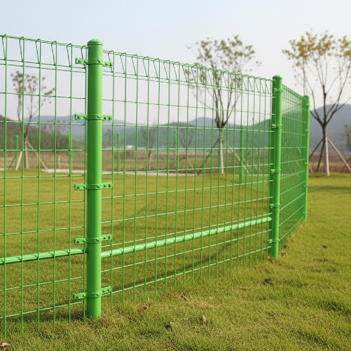
안전 방호 울타리 완제품

하단 촘촘한 유해동물 차단망

친환경 다크그린 고내후성 도장
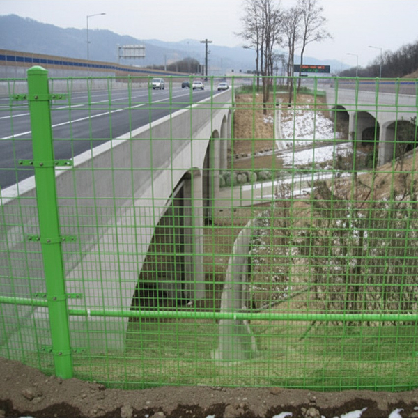
산간 경사지 완벽 밀착 시공
개비온철망 (용접형 개비온 패널 / Gabion Mesh)
Welded Wire Gabion Baskets & Retaining Wall Structures
전기저항 용접식 고강도 격자 구조체 • 석축 옹벽 배부름 방지 • 친환경 조경 옹벽
내식성이 뛰어난 아연도금 강선을 전기저항 용접하여 정밀 격자로 제작한 박스형 철망 구조체입니다. 전통적인 꼬임형과 달리 형상 유지력이 월등하여 돌 채움 시 불룩 튀어나오는 배부름 현상이 없으며, 배수성이 우수한 친환경 석축 옹벽 및 조경 벽체로 시공됩니다. (※ 돌 채움 시공이 아닌 정밀 철망 패널 제조 납품)
- 구조 강점: 전기저항 용접식 정밀 격자망으로 돌 채움 시 배부름 없는 형상 유지력
- 철선 규격: 고내식 아연도금 강선 및 고급 분체도장 (주문 규격별 맞춤 가공)
- 주문제작: 원하시는 선경, 망목, 치수로 100% 주문 제작 공급
- 주요 용도: 자연친화적 조경 벽체, 도로 사면 보호 옹벽, 하천 제방 수해 방지망
용접 개비온 패널 제작 사양 (삼협철망 공식 기준)
※ 현장 도면 규격 100% 맞춤 제작 (분체도장 포함)
| 구분 |
제작 특징 및 구조 강점 |
적용 분야 (주요 용도) |
| 조경용 개비온 패널 |
정밀 전기저항 용접식 격자 구조 • 자연석 채움 시 배부름 없는 평면 유지 |
공원 화단, 빌딩 외벽 인테리어, 정원 디자인 담장 |
| 석축 및 옹벽용 구조체 |
고내식 아연도금 강선 적용으로 장기 내구성 확보 • 탁월한 배수성 |
도로 사면 보호 옹벽, 토목 법면 보강, 낙석 방지 옹벽 |
| 하천 호안용 철망태 |
수해 방지 친환경 다공질 구조 • 현장 발주 규격 도면 맞춤 일괄 제작 |
하천 제방 호안 블록, 친환경 수변 생태 복원 구간 |
개비온 토목 및 조경 옹벽 시공 실적
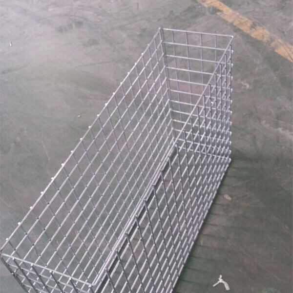
자연석 조경 옹벽 시공

단단한 형상 유지 용접 철망 구조체

하천 제방 친환경 수해 방지 공사
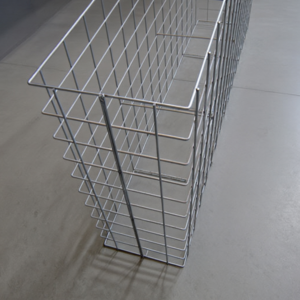
현대 건축 디자인 외벽 개비온
메쉬파레트 • 조립식 견사망
Storage Mesh Pallets • Modular Bolt-Assembly Kennel Fence
접이식 다단 적재 메쉬파레트 • 무용접 볼트 조립식 견사망 (규격 맞춤 주문 제작)
6.0Ø 강선 구조로 견고하며 다단 적재(3~4단) 및 지게차 4방향 이동이 가능합니다. 미사용 시 접어서 보관할 수 있어 공간을 효율적으로 절감합니다.
- 규격: 800×600, 1000×800, 1200×1000mm 등
- 선경/망목: 6.0Ø • 50×50mm (아연도금 및 분체도장)
- 옵션: 우레탄 바퀴 장착, 내부 칸막이 주문 제작
포인트 정밀 스폿 용접으로 체결 강도가 탁월하며, 현장에서 별도 용접기 없이 볼트와 전용 클립만으로 간편 조립 가능한 대형 안전 견사망입니다.
- 체결 방식: 무용접 볼트/클립 체결식 간편 조립
- 도금 사양: 고내식 아연도금 및 분체도장 코팅
- 규격: 원하는 가로/세로 규격 100% 맞춤 주문 제작
메쉬파레트 및 견사망 현장 사진 갤러리
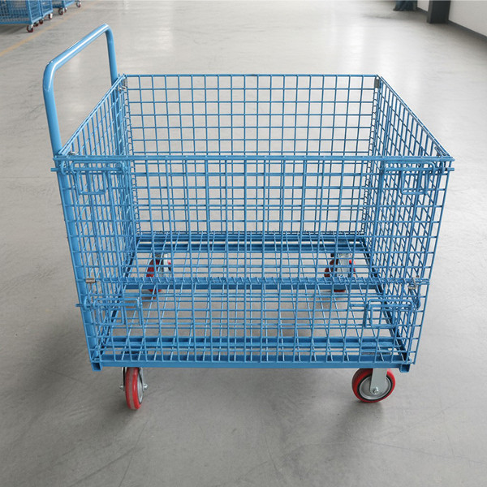
정밀 6Ø 스폿 용접
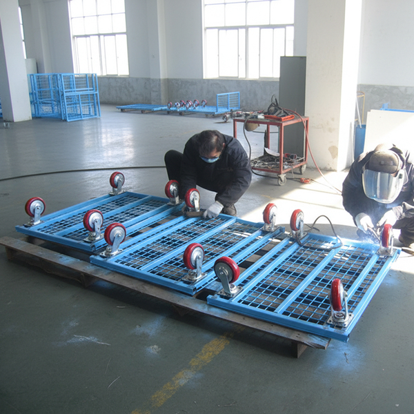
창고 다단 적재 운영

접이식 부피 절감 보관
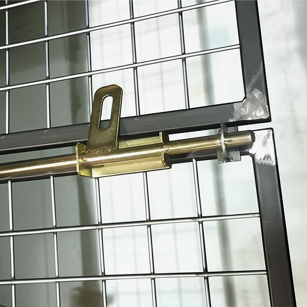
개폐 도어 일체형 패널
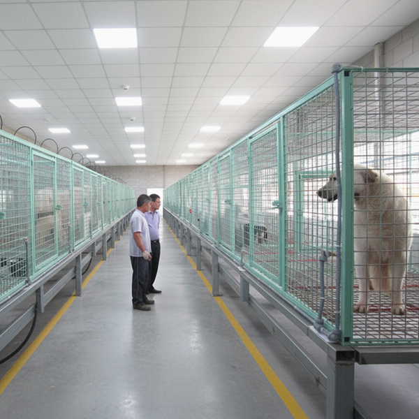
조립식 현장 완공 실물
완제품 출하 품질 • 전국 현장 납품 실적
Finished Products Quality Inspection, Nationwide Supply Records & Quick Quote
30년 전통 직영 공장 직판 • 철저한 출하 전 치수 검수 • 대기업 및 전국 관공서 공사 납품
전국 산업단지, 도로변 동물보호 유도방호망, 대형 물류센터, 조경 및 토목 현장 납품
🏭 삼협철망(주) 직영 생산 • 전국 현장 직판 시스템 핵심 가치
① 공장도 직판 최저 단가
유통 벤더사를 거치지 않아 시중 대리점 대비 최소 10% 이상 자재 원가를 절감합니다.
② 직영 공장 신속 제작 • 직송
인천 직영 공장에서 주문 즉시 제작에 착수하여 전국 건설 현장 납기를 철저히 준수합니다.
③ 특수 도면 100% 맞춤 제작
비규격 선경, 변형 망목, 일체형 프레임 결합 등 현장 발주 사양에 맞춰 일괄 제작합니다.
전국 현장 시공 실적 및 출하 갤러리
용접철망 밴딩 결속 및 화물 직송
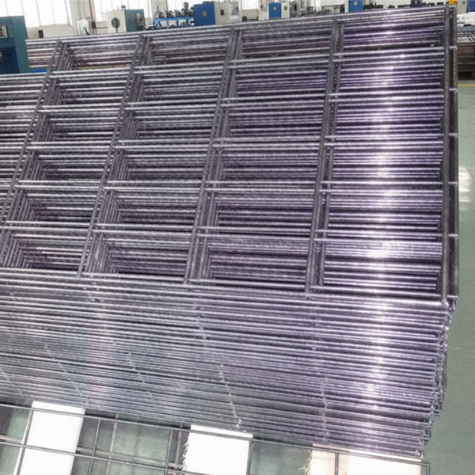
출하 대기 규격 적재 및 안전 상차
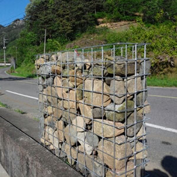
자연석 채움 개비온 옹벽 시공
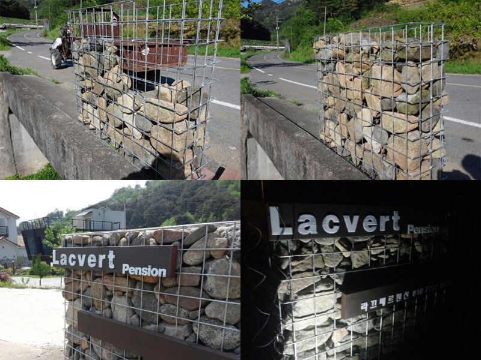
외벽 조경 및 석축 옹벽 시공 실적
상업시설 천정 메쉬 인테리어 가공